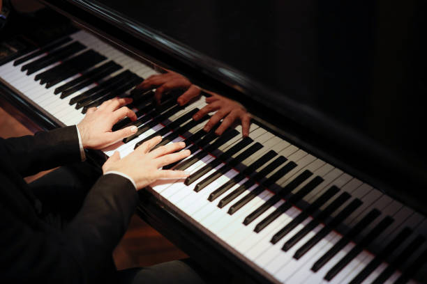

Piano
Pianos are classified as simple chordophones. They make sound by pressing keys where a hammer strikes a string that vibrates to make sound. The piano is unique in that it requires a percussion-esque action to create sound yet the sound is created by an acoustic based system.

Classical Applications
The piano is a very relevant classical instrument. It served as its own solo piece for famous multi-movement concertos. In orchestra, the piano mostly takes a comparatively minor role as a background instrument, establishing the chords for the piece and occasionally participating in melody and counter-melody.

Famous Piece
Clair de lune is a piece from Claude Debussy's Suite bergamasque. It is one of the most famous piano piece of all time.
Fun Fact!
The piano has the widest range of tones of any instrument. It can play from A0 to C8 (for context, the clarinet has a range of E3 to C7, so about double the range of a clarinet).